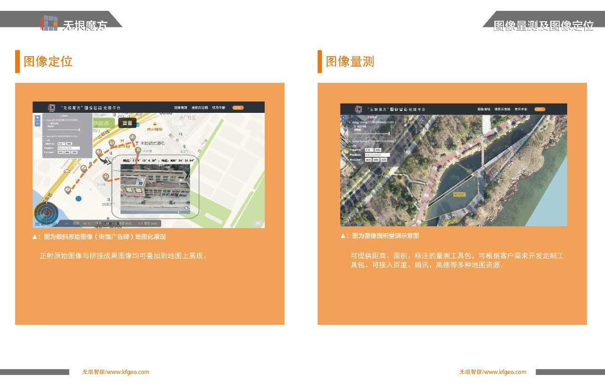

感谢您使用无垠天巡（K-FLY）飞行器地面控制APP。请仔细阅读用户手册，严格遵守本手册要求的操作流程及规范，以使您的无垠天巡（K-FLY）APP能正常运行。
鉴于无垠智探无法控制用户对飞行器及无垠天巡的具体使用、安装、总装、改装以及其他不当使用等情况，由以上违背本手册所造成的财物损失、人身伤害及社会公共危害，无垠智探将不承担相应的损失及赔偿责任。
无垠天巡（K-FLY，以下简称K-FLY）是针对无人机爱好者、行业应用、科研人员的一款航线规划APP，当前版本包含四个主要功能模块，倾斜采集、多边形采集、指点飞行、自由控制。
倾斜采集通过优秀的算法实现了单镜头模拟五镜头的效果，使三维建模效果可以达到行业应用级别。用户可以根据目标区域移动、拉伸、旋转矩形范围框体，K-FLY可自动生成模拟五镜头的五条航线（正射、前视、后视、左视、右视），适配无人机即可根据设定航线自动采集数据。全过程无需用户进行其他操作，快捷高效。
多边形采集是针对无人机单镜头区域航摄与图像拼接后处理相结合而开发的模块。在该模块中无人机可任意设置框选区域形状，不似“倾斜采集”模块中受矩形框选区域的限定
指点飞行根据无人机巡逻及探测需要开发，支持用户在APP地图上按指定点进行飞行，单次最少支持2航点、最大支持99个航点飞行。
自由控制支持用户在自由场景下手动操作无人机飞行，在飞行过程中支持多种格式的照片及影像。
1、使用K-FLY进行多边形飞行、指点飞行时请保持无人机GPS模式；当自由控制中，使用姿态模式飞行时请时刻注意无人机飞行状态，谨慎飞行；
2、请一定保持飞行过程中手机及遥控器与无人机之间无遮挡（遮挡包括但不限于人体、树林、楼群或山脉等），障碍物遮挡时可能导致APP图传不稳定，甚至瞬间失去连接；
3、无人机起飞降落时尽量选择空旷地点，保持手机及遥控器在高处，这样可以最大限度增加图传的传输距离；
4、当APP提醒无人机低电量时（一般为电量剩余30%），请及时返航；
5、当APP提醒无人机状态异常，指南针异常、视觉定位异常、GPS信号弱等信息时，请高度重视，并建议暂停无人机当前任务，待无人机状态正常时再进行飞行活动；
如果您在使用无垠天巡（K-FLY）过程中，遇到无法解决的问题，请通过电话（027- 83861936）及无垠智探官网（www.kfgeo.com）联系我们的客服人员。如果您有任何宝贵建议，欢迎通过微信公众号“wuyinzhitan”及官方邮箱kuafugeo-003@kfgeo.com 向我们留言。1.使用K-FLY App执行任务前，请确保
2.第一次使用K-FLY App时
3.准备工作
4.数据采集
app包含四个功能模块
提示：若APP提示无人机未连接，请耐心等待1—2分钟，若依旧未连接，断开遥控器与手机的连接线，重新连接，并为手机选择K-FLY。当K-FLY功能模块中（倾斜采集、多边形采集、指点飞行）的地图上出现小飞机及蓝色小圆点（手机位置）时，K-FLY中的功能模块可以正常使用。1.注册、登录K-CLUB账号
1、首先请前往“无垠魔方”图像智能处理平台（http://www.kfgeo.com/）注册账号。登录网址，点击"登录"，然后点击”免费注册“，输入用户名,密码，邮箱（需真实有效，找回密码的唯一途径）。
2、在注册邮箱中去激活账号后，在APP中登录。如下：
如果您在注册，登录过程中，遇到无法解决的问题，请通过电话（027- 83861936）及无垠智探官网（www.kfgeo.com）联系我们的客服人员。如果您有任何宝贵建议，欢迎通过微信公众号“wuyinzhitan”及官方邮箱kuafugeo-003@kfgeo.com 向我们留言。2.倾斜采集
（1）作业区域确定
（2）航线参数设置
注意：消费级无人机自带的GPS一般高程误差在±10m，因此在设置飞行高度时要有20m的允许误差，请不要轻易尝试以贴近建筑物的高度飞行！
（3）相机参数设置
（4）飞行任务指令设置
注意：
（5）任务加载
3.多边形采集
（1）作业区域确定
（2）飞行参数设置
飞行高度、航向重叠率、旁向重叠率、相机倾角、飞行速度与倾斜采集模块中一致。
（3）相机参数设置
照片的宽高比、照片格式设置与倾斜采集模块中一致。
（4）飞行任务指令设置
返航高度、跳过已完成部分、任务完成后无人机状态设置与倾斜采集模块中一致。
上传任务（航线规划完成上传至无人机）、开始任务、暂停任务、继续任务、结束任务、开始返航（自动返航）与倾斜采集模块中一致。
（5）加载任务子菜单
保存任务、加载任务与倾斜采集模块中一致。
注意：多边形采集航线的生成是以相机倾角为90（即正射）为固定值生成，若调整无人机相机倾角，亦可采集照片，但图像真实覆盖范围可能会与框选区域存在合理偏差。
4.指点飞行
指点飞行支持用户在地图上确定航点和按照航点顺序（按照用户添加顺序排列）进行飞行（1）添加航点
（2）飞行参数设置
应设置内容包括航线执行任务（无、照片、视频）、飞行高度、飞行速度（建议5m/s）。
（3）相机参数设置
若是飞行任务是照片，则相应选择照片格式JPEG或RAW。任务为视频和无时，相机参数不支持自定义，视频格式为在自由控制模块中设置的格式。
（4）飞行任务指令设置
除剔除“跳过已完成部分”功能外，同多边形采集
注意：
5.自由控制
自由控制支持用户使用遥控器手动自由控制无人机
一键起飞，用户无需手动启动飞起无人机。一键起飞将使无人机升高到2—3m处
一键返航，无人机飞行中，按一键返航，无人机将会返回任务设定好的返航点（注意：一般无人机起飞点即是返航点）
重点参数解释：
自由控制界面
6.图像查看与上传
1、使用此功能先请在APP中登录K-CLUB平台账号。
2、图像查看的入口在倾斜采集，多边形飞行及指点飞行界面都有，如下
3、图像查看图片查看界面，可以看到飞行器SD卡内的图像，每个图像上两个按钮，删除和下载，删除是将此图像从SD卡中删除，下载是将图像保存报手机，保存位置为/storage/.../KFly。左上角是打开侧面可以按顺序批量下载图片（每次十张），也可以一键清空SD卡内的照片。上传按钮是将下载的图片上传到K-CLUB平台，可以在K—CLUB中查看
如果您在注册，登录过程中，遇到无法解决的问题，请通过电话（027- 83861936）及无垠智探官网（www.kfgeo.com）联系我们的客服人员。如果您有任何宝贵建议，欢迎通过微信公众号“wuyinzhitan”及官方邮箱kuafugeo-003@kfgeo.com 向我们留言。7.无垠天巡相关服务
（1）图像拼接
图像拼接：某一目标航拍采集的多张正射原始图像进行拼接，生成整张高清、垂直的正射区域成果图像。也可制作三维模型、地形图等测绘成果。
（2）定位量测
单点式定位支持倾斜原始图像地图展现，可根据航线轨迹与航拍点生成图像，通过点击地图上的航点可显示缩略图与原始图像。
图像量测指在无垠魔方图像智能处理平台地图展现界面提供量测、标注工具包，目前可对距离、面积进行量测和标注，还可根据客户需求开发定制工具包。百度、腾讯、高德等多种地图资源均可接入。
K-FLY用户手册所有文字内容、图片，版权均属湖北无垠智探科技发展有限公司所有，未经湖北无垠智探科技发展有限公司书面授权，任何企业、网站、个人不得转载手册内容，违者本公司将保留依法处理的权利。